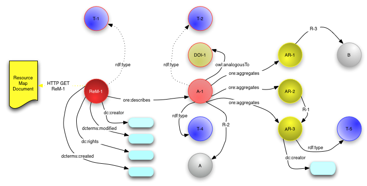

|
Open Archives Initiative Object Reuse and Exchange |
|
Open Archives Initiative Object Reuse and Exchange |
DO NOT USE THIS SPECIFICATION, see instead the CURRENT ORE SPECIFICATIONS.
This document was part of an alpha release and has been superseded.
Open Archives Initiative Object Reuse and Exchange (OAI-ORE) defines standards for the description and exchange of aggregations of Web resources. This document provides a brief overview of the abstract data model that is the foundation for these standards. The data model is described in detail in [Data Model]. This user guide is one of several documents comprising the OAI-ORE specification and user guide.
1. Introduction
2. Foundations
3. Aggregation
4. Resource Map
5. Relationships to other Aggregations
6. References
A. Acknowledgements
B. Change Log
The ORE Model makes it possible to associate an identity
with aggregations of web resources and to describe their structure and
semantics. It does this by introducing the Resource Map
(ReM), which is a resource identified by a URI (say ReM-1) that encapsulates
a set of RDF statements. These statements instantiate an aggregation
as a resource with a URI, enumerate the constituents of the aggregation, the
relationships among those constituents, and the Web context of the aggregation.
The ORE Model can be serialized in a variety of formats which will be described,
along with mappings of ORE Model concepts, in companion ORE documents. The
primary serialization is Atom [ORE Atom User Guide,
ORE Atom Profile]. Direct RDF serialization is also
described in [Representing Resource Maps Using RDF Syntaxes].
The ORE Model is based on the Web Architecture [Web Architecture] in which a unit of information is called a Resource and is identified by a URI. Some URIs are based on common protocols, such as HTTP, and can be dereferenced to yield Representations. We refer to such URIs as protocol based URIs. The ORE Model also uses RDF triples to make statements that relate a subject resource to an object resource or literal via a predicate (relationship). Example triples might include (in N3 format):
# resource URI-1 has type T-1, and was created by Joe Bloggs <URI-1> rdf:type <T-1>. <URI-1> dc:creator "Joe Bloggs".
meaning that resource URI-1 has type denoted with the URI T-1,
and was created by Joe Bloggs. The ORE Model uses predicates from a number
of vocabularies and in this document we use the following namespace prefixes.
| Prefix | Namespace URI | Description |
|---|---|---|
dc |
http://purl.org/dc/elements/1.1/ |
Dublin Core elements |
dcterms |
http://purl.org/dc/terms/ |
Dublin Core terms |
ore |
http://www.openarchives.org/ore/terms/ |
ORE vocabulary terms |
owl |
http://www.w3.org/2002/07/owl# |
OWL vocabulary terms |
rdf |
http://www.w3.org/1999/02/22-rdf-syntax-ns# |
RDF vocabulary terms |
A Resource Map describes an Aggregation which is a set of resources, and possibly their types and relationships among the resources. Resources in the Aggregation are called Aggregated Resources.
In order to be able to talk about the Aggregation on the web, it must have a URI
(say A-1). The ORE Model requires that there is a one-to-one correspondence
between an Aggregation and a Resource Map. This one-to-one relationship between a ReM-1
and its corresponding A-1 is syntactically enforced. The Aggregation URI A-1 MUST be
constructed by appending a fragment identifier to the Resource Map URI ReM-1. The
fragment idenitifer MUST be the string #aggregation. For example, the
Resource Map available from the URI http://sample.org/ReM-1 describes the
Aggregation http://sample.org/ReM-1#aggregation.
A Resource Map is obtained as a representation of the resource identified by the protocol-based URI ReM-1. The following figure shows a complete Resource Map with statements indicated as arrows from subject resource to object resource or literal. The remainder of this section explains the components of this graph step-by-step.

The Resource Map is identified by ReM-1 and an HTTP GET on ReM-1
must yield a serialization of the Resource Map. Note also that ReM-1
appears as a node in the figure and is the subject of several triples. First, there
must be triples providing the type of the Resource Map, the type of the Aggregation,
and linking the Resource Map to the Aggregation that it describes:
# mandatory, ReM-1 is a Resource Map (shown as T-1) <ReM-1> rdf:type ore:ResourceMap. # mandatory, A-1 in an Aggregation (shown as T-2) <A-1> rdf:type ore:Aggregation. # mandatory, ReM-1 describes A-1 <ReM-1> ore:describes <A-1>.
Some metadata about the Resource Map is mandatory, and additional metadata may optionally be expressed:
# mandatory: authoring authority and modification time of ReM <ReM-1> dc:creator "Joe Bloggs". <ReM-1> dcterms:modified "2007-10-15T00:00:00Z". # optional: rights pertaining to and original creation time of ReM <ReM-1> dc:rights <http://creativecommons.org/licenses/publicdomain/>. <ReM-1> dcterms:created "2007-10-15T00:00:00Z".
If the Aggregation denotes an information object that has other identifiers
then these are expressed using the ore:analogousTo predicate:
<A-1> ore:analogousTo <DOI-1>.
For the particular case where the Aggregation is also identified by another
URI then the owl:sameAs predicate my be used.
All of the Aggregated Resources are linked to the Aggregation with the
ore:aggregates predicate:
<A-1> ore:aggregates <AR-1>. <A-1> ore:aggregates <AR-2>. <A-1> ore:aggregates <AR-3>.
Thus far, the Aggregation is just a bag of resources, AR-1,
AR-2, and AR-3, unrelated except for their status as
constituents of the Aggregation.
A Resource Map may also describe the structure of the Aggregation by expressing internal
relationships between the Aggregation and/or Aggregated Resources, for example:
# shown as R-1 <AR-2> dc:hasFormat <AR-3>.
Finally, the Resource Map may include two types of external relationships: 1)
Semantic types may be associated with either the Aggregation and/or the Aggregeted
Resources using the rdf:type predicate.
2) The context of the Aggregation among other other resources may be expressed using
predicates in any vocabulary provided either the subject or object is the Aggregation
or and Aggregated Resource.
# A-1 has type T-4 (journal article perhaps) and is part of resource A <A-1> rdf:type <T-4>. <A-1> dcterms:isPartOf <A>. # AR-1 references B (perhaps another article) and has type Text <AR-1> dcterms:references <B>. <AR-3> rdf:type <http://purl.org/dc/dcmitype/Text>.
When reusing Resource Maps and the Aggregations that they descibe, it is important
to remember the distinction between these two concepts. Statements about ReM-1
are statements about the Resource Map and not the Aggregation; statements about
A-1 (= ReM-1#aggregation) are statements about the intellectual
object that is the Aggregation.
An Aggregated Resource may be aggregated in more than one Aggregation (say
A-1 and A-2). The predicate ore:isAggregatedBy
is the inverse of ore:aggregates and allows membership in another
Aggregation to be expressed.
# Creator of ReM-1 knows AR-1 aggregated by A-2 as well as A-1 <AR-1> ore:isAggregatedBy <A-2>.
The Resource Map describing A-2 is naturally obtained when the fragment
identifier part of A-2 is removed (leaving ReM-2 since
A-2 = ReM-2#aggregation) in the process of dereferencing
A-2.
A second use of ore:isAggregatedBy is to indicate nesting, where
one Aggregation an Aggregated Resource in another Aggregation. Image that
A-1 is a journal article which is part of a journal issue
(Aggregation A-3). This context can be expressed in ReM-1
with the following triple.
# ReM-1 indicates that aggregation A-1 is aggregated by A-3 <A-1> ore:isAggregatedBy <A-3>.
This document is the work of the Open Archives Initiative. Funding for Open Archives Initiative Object Reuse and Exchange is provided by the Andrew W. Mellon Foundation, Microsoft, and the National Science Foundation. Additional support is provided by the Coalition for Networked Information.
This document is based on meetings of the OAI-ORE Technical Committee (ORE-TC), with participation from the OAI-ORE Liaison Group (ORE-LG). Members of the ORE-TC are: Chris Bizer (Freie Universität Berlin), Les Carr (University of Southampton), Tim DiLauro (Johns Hopkins University), Leigh Dodds (Ingenta), David Fulker (UCAR), Tony Hammond (Nature Publishing Group), Pete Johnston (Eduserv Foundation), Richard Jones (Imperial College), Peter Murray (OhioLINK), Michael Nelson (Old Dominion University), Ray Plante (NCSA and National Virtual Observatory), Rob Sanderson (University of Liverpool), Simeon Warner (Cornell University), and Jeff Young (OCLC). Members of ORE-LG are: Leonardo Candela (DRIVER), Tim Cole (DLF Aquifer and UIUC Library), Julie Allinson (JISC), Jane Hunter (DEST), Savas Parastatidis (Microsoft), Sandy Payette (Fedora Commons), Thomas Place (DARE and University of Tilburg), Andy Powell (DCMI), and Robert Tansley (Google, Inc. and DSpace)
We also acknowledge comments from the OAI-ORE Advisory Committee (ORE-AC).

This work is licensed under a Creative Commons Attribution-Noncommercial-Share Alike 3.0 Unported License.
Use of this page is tracked to collect anonymous traffic data. See OAI privacy policy.